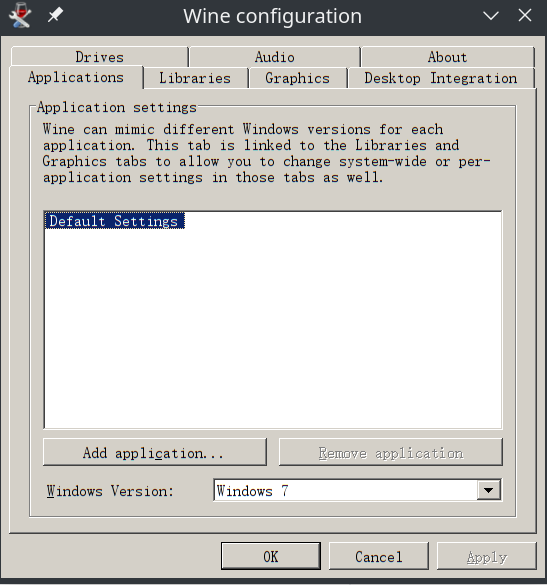
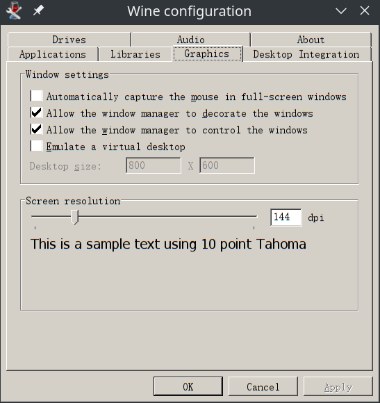

一个令 Linux
用户十分头痛的问题就是QQ和微信的使用。目前腾讯有Linux版的QQ，但是界面十分简陋，仿佛上世纪的产品，且没有Linux版的微信。之前一直在用的微信是
electronic-wechat，是基于网页版微信用electron进行UI展示的开源软件，虽然一定程度上可以用了，但毕竟只是基于网页版重新写了个UI，bug很多，而且近两年注册的微信号因为不能登录网页版微信所以不能用。于是就想能不能用
Wine 装一个 windows 下的微信客户端解决问题。
一、Wine 简介
Wine是在x86、x86-64容许类Unix操作系统在X Window System运行Microsoft Windows程序的软件。另外，Wine也提供程序运行库（Winelib）来帮助计算机程序设计师将Windows程序移植到类Unix系统；也有不少软件经过Wine测试后发布，比如Picasa、uTorrent、MediaCoder。
Wine通过提供一个兼容层来将Windows的系统调用转换成与POSIX标准的系统调用。它还提供了Windows系统运行库的替代品和一些系统组件的替代品。为了避免著作权问题，Wine主要使用黑箱测试逆向工程来编写。
Wine最早是“Windows Emulator”，即Windows模拟器的缩写，但Wine现在为“Wine Is Not an Emulator”的递归缩写，即Wine不是模拟器。Wine的正确名称是“Wine”，而不是全大写或全小写。
以上是 wiki 对 Wine 的简介。主要就是通过一个兼容层改变 windows 的系统调用，从而能在使用 POSIX 标准的系统（如Linux）上运行 windows 的软件。如果不是很懂的话把它看作是一个轻量的虚拟机也行（虽然两者完全不同）。
二、安装步骤
1. 安装 Wine
Wine 在大部分 Linux 发行版的软件库中都有，直接用包管理器进行安装即可。例如在 ubuntu 下使用 apt：
1 | sudo apt install wine |
Wine 除了基础版本以外，还有 deepin 系统基于 Wine 开发的 deepin-wine，主要用于 deepin 系统，一般只用基础版的 Wine 就行了。
安装完 Wine 后会附带 winecfg 程序，这是用来调整要模拟的
windows 版本、选择增加的 dll 库、画面分辨率等设置的。
2. 安装 winetricks
winetricks 是一个辅助脚本，用于在 wine 中下载并安装各种闭源的组件和运行库。因为 windows 版的微信运行需要 riched20.dll 和 riched32.dll 两个动态库的支持，因此需要用到 winetricks。
使用包管理器安装的 winetricks 可能版本过老，导致安装的依赖不对，因此最好直接去 github 上下载。
1 | wget https://raw.githubusercontent.com/Winetricks/winetricks/master/src/winetricks |
然后给权限并移动到/usr/local/bin/（系统路径之一）下
1 | chmod +x winetricks # 给执行权限 |
除此之外， winetricks 有一个依赖项是
cabextract，需要手动安装：
1 | sudo apt install cabextract |
3. 创建 wine bottle
如果直接用默认参数运行 Wine、winetricks
的话，装的所有东西都会装到系统盘里，不同的软件要用的 dll
可能不一样，最后会杂糅在一起，而且它塞一堆 dll
进系统盘我们肯定不愿意，但如果手动创建 wine bottle
则可以把这些环境分开，就像 python 中的 virtualenv
一样。创建的方式很简单，只需要指定这些软件打开的路径即可。
1 | cd /path/to/target # 切到用来装 Wine 环境的路径 |
初次进入 winecfg 时可能会跳出很多错误提示，让你下载一些依赖，可以直接跳过，等以后要用了再下载。跳过之后进入 winecfg 的界面，很有可能字、界面非常小，这是因为自己在 Linux 系统中设置了屏幕放缩，在Graphics->Screen Resolution 一栏中可以调整 dpi，从而调大字。

至此一个基础的环境已经配置好了，如果要运行一些 windows 程序时只需要用以下指令即可：
1 | WINARCH=win32 WINEPREFIX=/path/to/target/Wine/WeChat wine ***.exe |
当然，复杂一点的 windows 程序需要的 dll 不一样，所以只用基础环境可能并不能运行。对于微信而言，还需要riched20.dll 和 riched32.dll 两个动态库，使用 winetricks 进行安装。
1 | WINARCH=win32 WINEPREFIX=/path/to/target/Wine/WeChat winetricks |
选择 Select the default wineprefix -> Install a Windows
DLL or component，然后勾选上riched20.dll 和 riched32.dll
两个动态库，按确定，等待下载即可。注意这里如果一直下载失败的话可能会需要科学上网，命令行代理可以使用proxychains。下载完成之后退出
winetricks 即可。
到此为止一个适合微信的环境已经建立完成，接下来只需要安装微信即可。
4. 安装微信
首先从微信官网下载微信安装器，然后用 Wine 运行安装器 WechatSetup.exe：
1 | WINARCH=win32 WINEPREFIX=/path/to/target/Wine/WeChat wine WechatSetup.exe |
接下来按照在 Windows 上的安装操作一样即可。安装完后即可使用。一般来说会自动在桌面产生快捷方式，如果桌面没有可以在开始菜单中搜索微信。